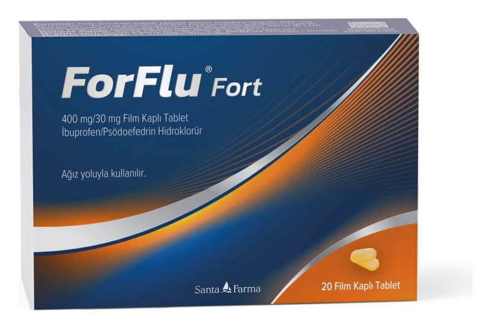

Forflu Fort 400 mg/30 mg Film Kaplı Tablet, 30 ADET

Ne için kullanılır
KT · Bölüm 1FORFLU®FORT, 20 ve 30 tabletlik blister ambalajlarda sunulan bir ilaçtır.
FORFLU®FORT, etkin madde olarak ibuprofen ve psödoefedrin içerir.
FORFLU®FORT, etkin maddesi olan ibuprofen, ağrı kesici ve ateş düşürücü özelliklere sahip nonsteroid antiienflamatuar bir ilaçtır. Psödoefedrin burun ve sinüslerde (burun boşluklarında) oluşan dolgunluğu gidermeye yarayan dekonjestan bir ilaçtır.
FORFLU®FORT, ağrı kesici, ateş düşürücü ve iltihap giderici etkileri sayesinde, başlıca, aşağıda belirtilen durumların tedavi edilmesi için kullanılır:
Grip, soğuk algınlığı ve sinüzit seyrinde gözlenen burun tıkanıklığı, baş ağrısı, ateş ve vücut ağrıları